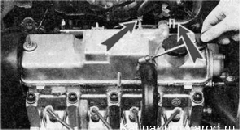
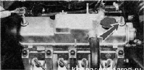
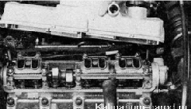
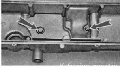
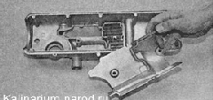
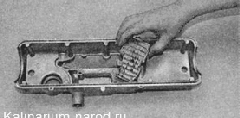
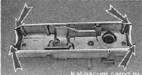

Прокладка крышки головки блока цилиндров двигателя 1,6 - заменаСнятие 1. Подготавливаем автомобиль к выполнению работы. 2. Снимаем декоративную накладку двигателя. 3. Отсоединяем трос привода от дроссельной заслонки и вместе с кронштейном крепления отводим в сторону радиатора. 4. Крестовой отверткой ослабляем хомуты крепления трех шлангов системы вентиляции картера. Снимаем шланги с патрубков крышки головки блока.  5. Торцовым ключом на 10 мм отворачиваем две гайки крепления крышки головки блока цилиндров. 6. Снимаем с каждой шпильки головки блока цилиндров шайбу и резиновую втулку. Поврежденные резиновые втулки необходимо заменить. 7. Снимаем крышку. 8. Извлекаем прокладку из крышки. Промывка 1. Отворачиваем пробку маслозаливной горловины. 2. Торцовым ключом на 10 мм отворачиваем два болта крепления корпуса маслоотделителя. 
3. Снимаем корпус. 
4. Извлекаем сетки маслоотделителя. 
5. Промываем снятые детали керосином, протираем ветошью и обдуваем сжатым воздухом (от шинного насоса). 6. Собираем маслоотделитель в обратной последовательности. Установка 1. Удаляем остатки масла с привалочной поверхности головки блока цилиндров, к которой прижимается прокладка крышки. 2. Укладываем новую прокладку в крышку. Радиусы с правой и левой стороны крышки разные. Убедитесь в том, что прокладка установлена правильно. 3. Наносим на углы прокладки тонкий слой герметика Локтайт574 или аналогичного. 
4. Устанавливаем крышку головки блока цилиндров в последовательности, обратной снятию. |